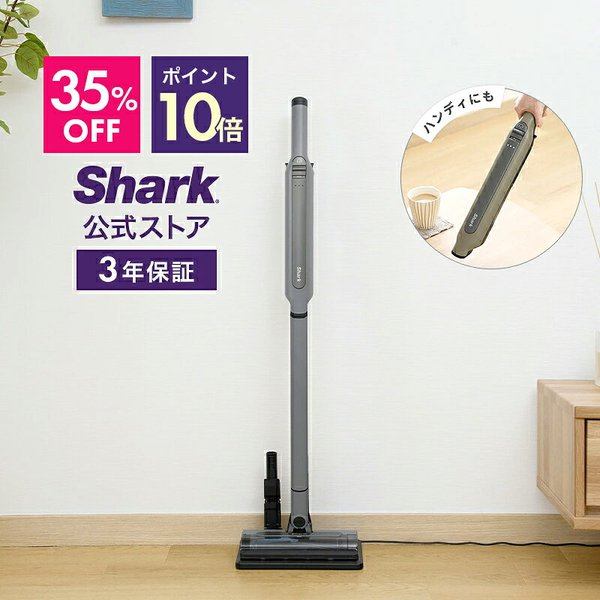
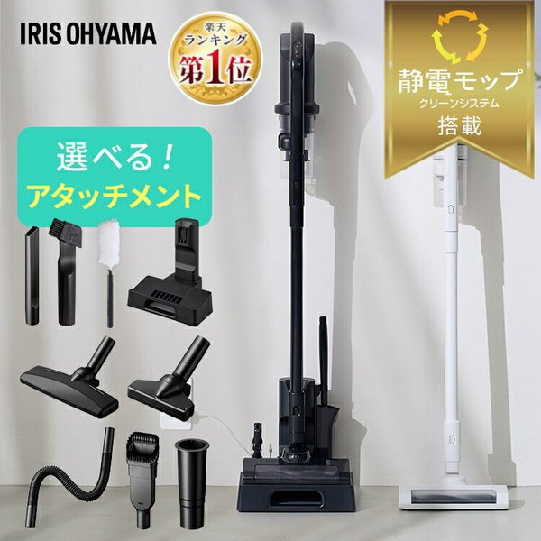
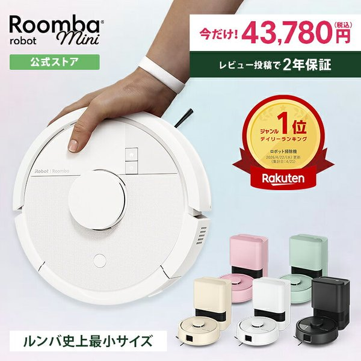
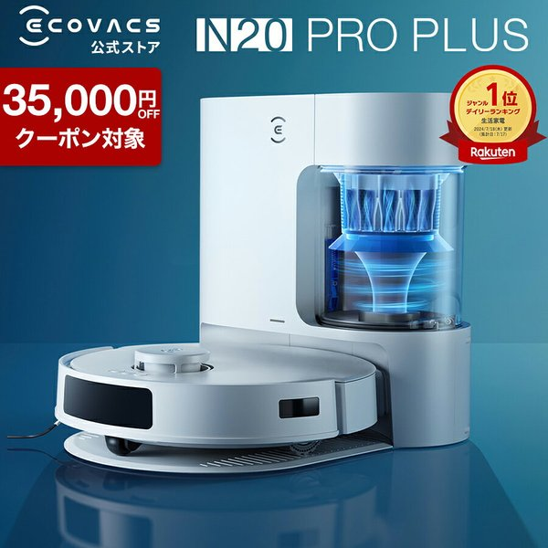
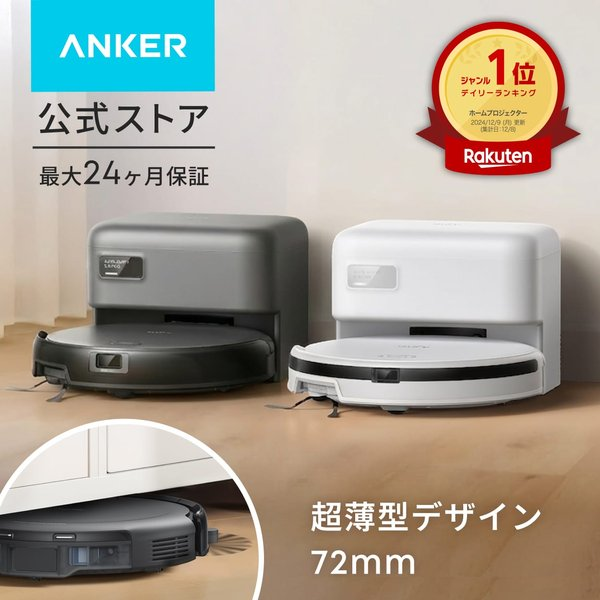
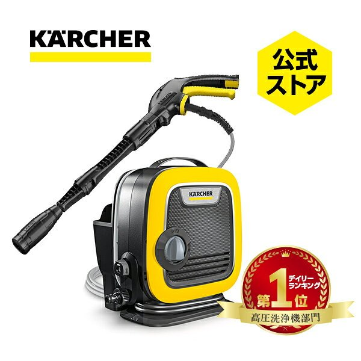
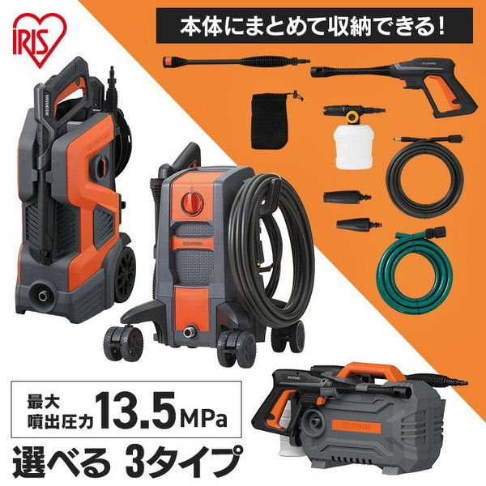
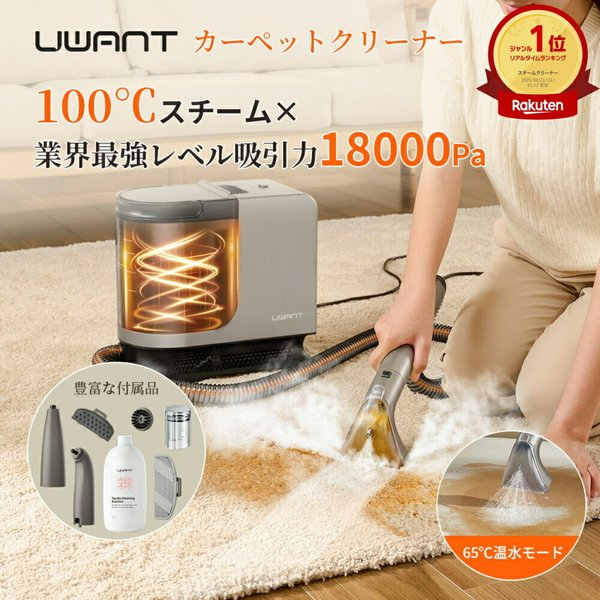
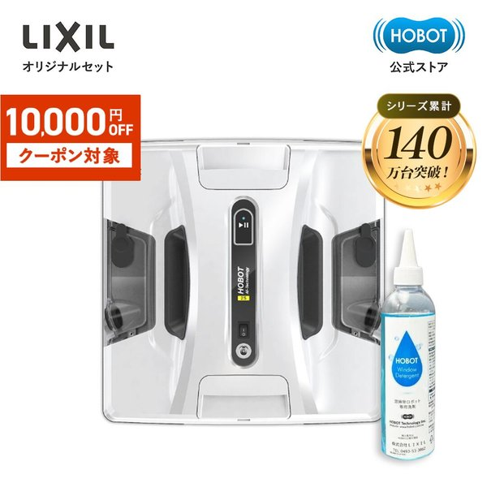

【2026年大掃除】コードレス掃除機・ロボット掃除機・高圧洗浄機・リンサーで家中すっきり！年末掃除の本命家電10選
大掃除は、気合いより道具で決まります。毎日使う掃除機を新しくするだけで床の汚れが落ちやすくなり、ロボット掃除機に日常のホコリを任せれば、年末にやることが減ります。
選ぶ軸はどこを掃除するか、電源と水が届くか、そして洗って使えるか。床はコードレス掃除機かロボット掃除機、ベランダと外壁は高圧洗浄機、ソファと布団はリンサークリーナー、窓は窓掃除ロボットと、場所ごとに道具が分かれます。コードレスは重さとバッテリーの持ち、ロボットはゴミ収集の有無、高圧洗浄機は水源の確保が選ぶときの分かれ目です。大掃除の前に、まず普段使いの道具を替えると、年末にまとめてやる量が減ります。
本記事では、楽天市場で人気・高評価の年末大掃除の掃除家電10選を、実売価格とレビュー評価つきで写真付き紹介します。
- おすすめ10選 スペック・特徴比較表
- BEST 1｜ダイソン V8 Slim Fluffy Extra コードレス掃除機（アウトレット）
- BEST 2｜シャーク EVOPOWER SYSTEM STD コードレススティッククリーナー
- BEST 3｜アイリスオーヤマ コードレス スティッククリーナー（スタンド・静電モップ付き）
- BEST 4｜ルンバ ミニ + AutoEmpty（自動ゴミ収集・水拭き対応）
- BEST 5｜エコバックス DEEBOT N20 PRO PLUS ロボット掃除機（自動ゴミ収集・水拭き）
- BEST 6｜Anker Eufy Robot Vacuum Auto-Empty C10（自動ゴミ収集・超薄型）
- BEST 7｜ケルヒャー 高圧洗浄機 K MINI（軽量・コンパクト・家庭用）
- BEST 8｜アイリスオーヤマ 高圧洗浄機 コンパクト（家庭用・軽量）
- BEST 9｜UWANT B400 カーペットクリーナー（リンサー・100℃スチーム・18000Pa）
- BEST 10｜HOBOT-2S 窓掃除ロボット（LIXIL公式セット・自動スプレー）
- 【読者負担0円】買わなくても得する無料サービス
- まとめ：年末大掃除の掃除家電10選の選び方
| 順位 | 商品名 | ブランド | 最大の特徴・おすすめ理由 | 総合評価 |
|---|---|---|---|---|
| BEST 1 | ダイソン V8 Slim Fluffy Extra コードレス掃除機（アウトレット） | ダイソン（Dyson） | 約2.1kgの軽量モデル | 4.31 |
| BEST 2 | シャーク EVOPOWER SYSTEM STD コードレススティッククリーナー | シャーク（Shark） | スティックを外してハンディにもなる | 4.44 |
| BEST 3 | アイリスオーヤマ コードレス スティッククリーナー（スタンド・静電モップ付き） | アイリスオーヤマ | 1万円を切る価格 | 4.13 |
| BEST 4 | ルンバ ミニ + AutoEmpty（自動ゴミ収集・水拭き対応） | iRobot（ルンバ） | ルンバ史上最小サイズで狭い場所にも入る | 4.43 |
| BEST 5 | エコバックス DEEBOT N20 PRO PLUS ロボット掃除機（自動ゴミ収集・水拭き） | エコバックス（ECOVACS） | 吸引と水拭きを同時に行う | 4.48 |
| BEST 6 | Anker Eufy Robot Vacuum Auto-Empty C10（自動ゴミ収集・超薄型） | Anker（Eufy） | 厚さ72mmで家具の下に入れる | 4.52 |
| BEST 7 | ケルヒャー 高圧洗浄機 K MINI（軽量・コンパクト・家庭用） | ケルヒャー（KARCHER） | 片手で持てる軽量コンパクト | 4.58 |
| BEST 8 | アイリスオーヤマ 高圧洗浄機 コンパクト（家庭用・軽量） | アイリスオーヤマ | 最大13.5MPaの家庭用高圧洗浄機 | 4.55 |
| BEST 9 | UWANT B400 カーペットクリーナー（リンサー・100℃スチーム・18000Pa） | UWANT（ユワント） | 100℃スチームと18000Pa吸引 | 4.42 |
| BEST 10 | HOBOT-2S 窓掃除ロボット（LIXIL公式セット・自動スプレー） | HOBOT（ホボット） | 自動スプレーで拭き上げまで行う | 4.40 |
ダイソン V8 Slim Fluffy Extra コードレス掃除機（アウトレット）

ダイソンのコードレス掃除機V8の軽量モデル。スティック全体で約2.1kgと軽く、階段の掃除でも腕が疲れにくいです。フラッフィーヘッドは柔らかいローラーで、フローリングの細かいホコリを絡め取ります。アウトレット品で2万7千円台。レビュー234件・評価4.31で、初めてのダイソンに向いています。楽天市場での実売価格は約27,900円（2026年11月時点）。
- 約2.1kgの軽量モデル
- フローリング向けのフラッフィーヘッド
- アウトレットで2万7千円台
- アウトレット品なので、保証期間と付属品を確認してから買う
シャーク EVOPOWER SYSTEM STD コードレススティッククリーナー

シャークのコードレススティッククリーナー。軽さと吸引力のバランスがよく、スティックを外せばハンディとしても使えます。スタンドが付き、充電しながら立てて置けるので、収納場所に困りません。レビュー473件・評価4.44。2万円前後で、ダイソンより安く同じ使い方ができるのが選ばれる理由です。楽天市場での実売価格は約21,450円（2026年11月時点）。
- スティックを外してハンディにもなる
- 充電スタンド付きで置き場所に困らない
- レビュー473件・評価4.44
- ゴミ箱は小さめなので、大掃除では何度か捨てる
アイリスオーヤマ コードレス スティッククリーナー（スタンド・静電モップ付き）

1万円を切るコードレススティッククリーナー。スタンドと静電モップが付き、掃除機をかけながら床の拭き掃除もできます。紙パック式で、ゴミ捨てのときにホコリが舞いにくいのが利点です。レビュー2,904件・評価4.13と口コミが多く、2台目の掃除機や一人暮らしの最初の1台に向いています。楽天市場での実売価格は約9,880円（2026年11月時点）。
- 1万円を切る価格
- 静電モップ付きで拭き掃除もできる
- レビュー2,904件の売れ筋
- 吸引力は上位機種に劣るので、絨毯の奥のゴミには物足りない
ルンバ ミニ + AutoEmpty（自動ゴミ収集・水拭き対応）

ルンバの小型モデルと自動ゴミ収集ステーションのセット。本体はルンバ史上最小サイズで、家具の脚の間にも入り込みます。掃除が終わると自分でステーションに戻り、ゴミを吸引するので、数週間ゴミ捨てをしなくて済みます。レビュー669件・評価4.43。大掃除の前に、日常のホコリを任せたい家に向いています。楽天市場での実売価格は約43,780円（2026年11月時点）。
- ルンバ史上最小サイズで狭い場所にも入る
- 自動ゴミ収集でゴミ捨ての手間が減る
- レビュー669件・評価4.43
- ステーションの置き場所と電源が必要
エコバックス DEEBOT N20 PRO PLUS ロボット掃除機（自動ゴミ収集・水拭き）

自動ゴミ収集と水拭きに対応したロボット掃除機。吸引と水拭きを同時に行い、カーペットとフローリングの境目も自動で判断します。レビュー2,323件・評価4.48と、ロボット掃除機の中では口コミが多く集まっています。クーポンを使うと3万円台になることがあり、この価格帯では機能が揃っています。楽天市場での実売価格は約69,800円（2026年11月時点）。
- 吸引と水拭きを同時に行う
- 自動ゴミ収集で手間が少ない
- レビュー2,323件・評価4.48
- 水拭きタンクの給水は自分で行う必要がある
Anker Eufy Robot Vacuum Auto-Empty C10（自動ゴミ収集・超薄型）

厚さ72mmの超薄型ロボット掃除機。ソファの下やベッドの下など、今までのロボットが入れなかった場所まで入ります。自動ゴミ収集ステーション付きで、ゴミ捨ての頻度を減らせます。レビュー845件・評価4.52。3万円を切る価格で、薄型と自動収集の両方を備えたモデルは多くありません。楽天市場での実売価格は約29,990円（2026年11月時点）。
- 厚さ72mmで家具の下に入れる
- 自動ゴミ収集ステーション付き
- 評価4.52・レビュー845件
- 水拭きは非対応なので、拭き掃除は別に必要
ケルヒャー 高圧洗浄機 K MINI（軽量・コンパクト・家庭用）

ケルヒャーの小型高圧洗浄機。本体は片手で持てる重さで、ベランダや玄関、自転車の泥落としに向いています。ホースとノズルが本体に収納でき、使わないときはコンパクトにまとまります。レビュー186件・評価4.58。大掃除で外まわりを洗いたいとき、最初に検討したい1台です。楽天市場での実売価格は約26,840円（2026年11月時点）。
- 片手で持てる軽量コンパクト
- ホースとノズルを本体に収納できる
- 評価4.58・レビュー186件
- タンク式ではないので、水道かバケツの水にホースをつなぐ
アイリスオーヤマ 高圧洗浄機 コンパクト（家庭用・軽量）

アイリスオーヤマの家庭用高圧洗浄機。最大圧力は13.5MPaで、ベランダの床や外壁の汚れを落とせます。本体は軽く、女性でも持ち運べる重さです。価格は1万4千円台で、ケルヒャーより安く始められます。レビューは20件と少なめなので、口コミはこれから増える段階です。楽天市場での実売価格は約14,800円（2026年11月時点）。
- 最大13.5MPaの家庭用高圧洗浄機
- 軽量で持ち運びやすい
- 1万4千円台で始められる
- レビューは20件と少なく、口コミはこれから増える段階
UWANT B400 カーペットクリーナー（リンサー・100℃スチーム・18000Pa）

布団やソファ、カーペットを洗うリンサークリーナー。100℃の高温スチームと18000Paの吸引で、染み込んだ汚れを吸い上げます。水を吹きかけて吸うだけなので、洗剤を泡立ててこすらずに済みます。レビュー339件・評価4.42。大掃除でソファと布団をまとめて洗いたい家に向いています。楽天市場での実売価格は約22,580円（2026年11月時点）。
- 100℃スチームと18000Pa吸引
- ソファ・布団・カーペットに使える
- 評価4.42・レビュー339件
- 洗ったあとは乾かす時間が必要なので、冬は早めに始める
HOBOT-2S 窓掃除ロボット（LIXIL公式セット・自動スプレー）

窓ガラスに吸着して拭く窓掃除ロボット。自動で水をスプレーし、拭き上げまで行います。高所の窓やベランダの手が届かない場所でも、リモコンで操作できます。落下防止機構付きで、吸着が弱まると止まります。レビュー104件・評価4.40。大掃除で窓を外さずに洗いたい家に向いています。楽天市場での実売価格は約39,490円（2026年11月時点）。
- 自動スプレーで拭き上げまで行う
- 高所の窓もリモコンで掃除できる
- 評価4.40・レビュー104件
- 価格は3万9千円台で、窓の形状によっては使えない
この記事の商品を買う前に、まずは無料で得する選択肢をチェック。どれも登録・利用は0円で、無料期間中に解約すれば料金はかかりません。読みたい雑誌がある人、ポイントを貯めたい人、アンケートなら気軽という人、それぞれに合うものを選べます。
初回31日無料・無料期間中に解約すれば0円 → 楽天ポイントモール｜登録無料で毎日ポイ活
買い物なしでもポイントが貯まる無料サービス → 楽天インサイト｜アンケートに答えてポイント
登録無料・すきま時間のアンケートで貯まる → 楽天カード｜年会費永年無料
新規発行・年会費ずっと0円 →
4つのサービスの違いと使い分けは「出費0円で得する！買わずにポイントが貯まる無料サービス厳選4選」でまとめています。
💡 まとめ：年末大掃除の掃除家電10選の選び方
大掃除の家電は、日常使いと季節の1回で分けて考えると選びやすいです。毎日使うコードレス掃除機とロボット掃除機は、軽さとゴミ捨ての手間で選ぶ。ベランダや外壁は高圧洗浄機、ソファと布団はリンサークリーナー、窓は窓掃除ロボットと、年末にしか使わない道具は、使う場所を決めてから買うと置き場所に困りません。高圧洗浄機は水道かバケツの水が必要なので、届く長さのホースを確認してください。洗ったあとの乾燥時間も含めて予定を立てると、12月30日に慌てずに済みます。
楽天市場では「5と0のつく日」や「お買い物マラソン」などのキャンペーンに合わせて購入すると、ポイント還元が最大化してお得に手に入ります。ぜひチェックしてみてくださいね。